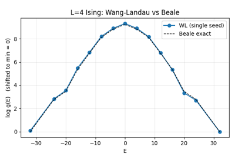
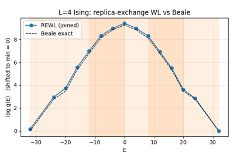
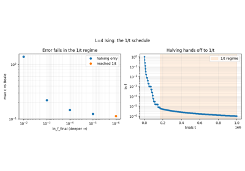

API reference¶
Top-level package¶
flatwalk — Wang-Landau (flat-histogram) sampling driver.
The names below are re-exported from flatwalk for convenience;
their full documentation lives with the source modules listed in this
page. For worked usage see the examples and
tutorials; the snippets below link the ones
that exercise each object.
Examples and tutorials using the core API¶

Single-walker Wang-Landau on the 2D Ising model

Replica-exchange Wang-Landau on the 2D Ising model

3. Sharpening convergence with the 1/t schedule
Binning¶
Bin schemes for Wang-Landau sampling.
The driver indexes g and H through a BinScheme so the same loop works
for 1D order parameters now and ≥2D extensions later. Concrete subclasses must
map an order-parameter value to a flat integer index, report dimensionality,
and expose bin edges/centers.
Only Bin1D is implemented in M1. A future BinND slots in by
implementing the same ABC.
- class flatwalk.binning.BinScheme[source]¶
Bases:
ABCAbstract mapping between order-parameter values and flat bin indices.
- abstractmethod value_to_index(q)[source]¶
Return the flat bin index for
q. RaisesIndexErrorif out of range.
- abstractmethod value_to_index_batched(q)[source]¶
Vectorized value_to_index for a stack of N order-parameter values.
Returns an integer index array of length N. Out-of-range entries get the sentinel index
-1(rather than raising) so the batched trial step can mask them — the inverse of the scalar contract, which raises. Callers must not indexg/Hwith a-1entry; gate on in_range_batched first.
- abstractmethod in_range_batched(q)[source]¶
Vectorized in_range: boolean mask of length N (inclusive domain).
- class flatwalk.binning.Bin1D(low, high, n_bins)[source]¶
Bases:
BinSchemeUniform 1D binning of the closed interval
[low, high].Bin edges are
np.linspace(low, high, n_bins + 1)so the first and last edges land exactly onlowandhigh.value_to_index(high)returnsn_bins - 1(the top edge is treated as inside the top bin).- value_to_index_batched(q)[source]¶
Vectorized value_to_index for a stack of N order-parameter values.
Returns an integer index array of length N. Out-of-range entries get the sentinel index
-1(rather than raising) so the batched trial step can mask them — the inverse of the scalar contract, which raises. Callers must not indexg/Hwith a-1entry; gate on in_range_batched first.
Driver and configuration¶
Wang-Landau driver — config, result, and the main driver class.
Algorithm reference: Wang & Landau PRL 86, 2050 (2001) for the standard
flat-histogram scheme; Belardinelli & Pereyra PRE 75, 046701 (2007) for the
1/t refinement that the driver switches to when the standard halving
would put ln_f below 1/t.
Architectural notes¶
The per-trial logic operates on a Walker (not on driver attributes), so a future multi-walker / REWL extension is additive, not a rewrite.
All bin arithmetic goes through
self.bin_scheme; no array indexing presumes 1D.An optional
exchange_handlerslot is present in the loop so REWL drops in without touching this file.Out-of-range proposals (spec §1.3): rejected.
gandHare still updated at the current bin (reflecting-boundary convention).
- class flatwalk.core.WLConfig(bin_scheme, beta=0.0, flatness_threshold=0.8, n_check=10000, ln_f_initial=1.0, ln_f_final=1e-08, checkpoint_path=None, checkpoint_every_t=1000000, trace_path=None, log_level='INFO')[source]¶
Bases:
objectConfiguration for one WL run.
Notes
bin_schemecarries the order-parameter domain and dimensionality.beta = 1/(k_B T). Wang-Landau samplesg(Q)independently of temperature;betaonly enters the acceptance criterion when the energy axis is not the order parameter (e.g. binning on magnetization while sampling at temperature T). For canonical “WL on E” runs, setbeta = 0; the energy term drops out by construction.
- Parameters:
- class flatwalk.core.WLResult(g, H, visited, bin_edges, bin_centers, t_total, n_f_stages, ln_f_final, converged, final_state, in_1overt=False, bin_current=-1, walker_energy=nan, rng_state=None, n_walkers=1, walker_bins=None, walker_energies=None, extra=<factory>)[source]¶
Bases:
objectEnd-of-run summary. Mirrors the on-disk checkpoint contents.
- Parameters:
g (ndarray)
H (ndarray)
visited (ndarray)
bin_edges (ndarray)
bin_centers (ndarray)
t_total (int)
n_f_stages (int)
ln_f_final (float)
converged (bool)
final_state (Any)
in_1overt (bool)
bin_current (int)
walker_energy (float)
rng_state (dict | None)
n_walkers (int)
walker_bins (ndarray | None)
walker_energies (ndarray | None)
extra (dict)
- flatwalk.core.compute_flatness(H, visited)[source]¶
Return
min(H[visited]) / mean(H[visited]), or 0.0 if degenerate.“Visited” is the cumulative mask (any bin ever entered), per spec §1.5. The ratio is over visited bins only, which matters during early exploration when many bins still have
H = 0.
- flatwalk.core.attempt_halve(ln_f, t, in_1overt)[source]¶
Apply one f-stage transition.
In the standard regime, halve
ln_f. If the halved value would be below1/t, switch to the 1/t-WL regime instead, withln_f = 1/t.Returns
(new_ln_f, new_in_1overt). Caller is responsible for resettingH(standard regime only) and updatingn_f_stages.- Parameters:
- Return type:
- flatwalk.core.build_trace_row(*, t, ln_f, flatness, acceptance_rate, H, visited, in_1overt, stage_index)[source]¶
Assemble one diagnostic row from the live driver state.
Factored out so the scalar and batched loops emit identical trace columns without copying the min/mean/max-over-visited reduction.
- class flatwalk.core.WLDriver(config)[source]¶
Bases:
objectOrder-parameter-agnostic Wang-Landau sampler.
- Parameters:
config (WLConfig)
- run(initial_state, energy_fn, order_parameter_fn, propose_move_fn, max_trials=None, rng=None, exchange_handler=None, resume_from=None)[source]¶
Run a Wang-Landau simulation. Returns the final
WLResult.propose_move_fnreturns(new_state, log_proposal_ratio). The acceptance criterion is:Δ = -β · (E_new - E_old) + g[bin_old] - g[bin_new] + log_proposal_ratio accept ⇔ U < exp(min(0, Δ))
Out-of-range proposals are rejected; g/H/visited are still updated at the current bin (reflecting-boundary convention).
- Return type:
- Parameters:
- run_batched(initial_state, energy_fn, order_parameter_fn, propose_move_fn, n_walkers, *, max_trials=None, rng=None, resume_from=None, exchange_handler=None)[source]¶
Run N walkers through a shared
gas one batch (docs §4).The N walkers advance together: each tick is one stacked call to each batched callback, never a Python loop over walkers. All N contribute to the same
g/Hvia a scatter add, so a single window converges faster than one walker would.t_totalcounts individual moves (n_walkersper tick), so the 1/t-WL schedule,n_check,checkpoint_every_t, andmax_trialsall use the same units as the scalar run; withn_walkers == 1the bookkeeping reduces to the scalar schedule exactly.In particular,
max_trialscaps the global number of trial moves — the total summed across all walkers (n_walkersper tick), not a per-walker count. A run ofNwalkers therefore stops after aboutmax_trials / Nticks (i.e. batched backend calls), each walker contributing roughlymax_trials / Nmoves.Replica exchange (per-window
g) is docs §5 and not wired here yet; passingexchange_handlerraisesNotImplementedError.- Return type:
- Parameters:
Walker¶
Walker — the per-replica state container.
The driver’s per-trial logic operates on a Walker, not on attributes of the driver itself. This keeps the door open for shared-g/multi-walker runs and for replica exchange (which swaps walker states) without rewriting the loop.
A single-walker WL run still uses exactly one Walker.
- class flatwalk.walker.Walker(state, bin_current=-1, energy=nan, rng=None, n_accepted=0, n_attempted=0, extra=<factory>)[source]¶
Bases:
objectState owned by one Markov-chain walker.
- Variables:
state – Whatever the user wants to represent a configuration. The driver passes it through to callbacks without inspection.
bin_current – Current flat bin index.
-1means “not yet placed” (the driver sets it on the first call to place).energy – Cached energy of
state(avoids re-callingenergy_fnafter every reject; updated on every accepted move).rng – Per-walker random source. Multi-walker runs give each walker an independent stream so a fixed master seed reproduces exactly.
n_accepted – Trials accepted since the last counter reset (used for trace acceptance-rate columns; reset by the driver every check interval).
n_attempted – Trials attempted since the last counter reset.
- Parameters:
- class flatwalk.walker.WalkerBatch(state, bin_current, energy, rng=None, n_attempted=<factory>, n_accepted=<factory>, extra=<factory>)[source]¶
Bases:
objectState for N walkers carried in flat arrays (the N-walker Walker).
The design rule (docs §4): for ≥2 walkers the per-tick primitives act on all N states at once. There is deliberately no Python-side list of Walker to iterate — one WalkerBatch holds N walkers’ worth of state in parallel arrays, and a single shared
rngprovides vectorized draws.- Variables:
state – Opaque batched configuration, passed through to the batched callbacks without inspection. The driver applies accepted moves with boolean-mask assignment (
state[accept] = new_state[accept]), so it must support that — a stackedndarray[N, ...]ortorch.Tensordoes; a plain Python list of N objects does not.bin_current –
ndarray[N]int — each walker’s current flat bin index.energy –
ndarray[N]float — cached energy per walker. Left untouched whenbeta == 0(the energy term drops out of acceptance and the batched energy call is skipped, per docs §4).rng – One shared numpy.random.Generator. A fixed master seed reproduces a batched run exactly.
n_accepted (n_attempted,) –
ndarray[N]int per-walker counters since the last reset (the driver resets them every check interval).
- Parameters:
Diagnostics¶
Per-check trace writer.
Writes one row per flatness check (or per 1/t-regime check interval) so a
WL run can be diagnosed after the fact: when ln_f dropped, where the
acceptance rate sat, which bins were underexplored, when the 1/t regime
kicked in.
TSV is the M1–M3 backing format (zero new deps, greppable, tail-able during
a live run). The TraceWriter class hides this so a future Parquet
backend slots in without changing callers.
- class flatwalk.diagnostics.TraceRow(t, ln_f, flatness, acceptance_rate, min_H_visited, max_H_visited, mean_H_visited, n_visited, in_1overt, stage_index)[source]¶
Bases:
objectOne row of per-check diagnostics.
- Parameters:
Checkpoint I/O¶
Checkpoint I/O.
Format: one numpy .npz file containing all the state needed to resume
bit-identically — g, H, visited, scalars (t_total,
n_f_stages, ln_f, in_1overt, bin_current,
walker_energy, n_bins), plus pickled walker_state and a
captured numpy Generator state.
Writes go through a .tmp sidecar + os.replace so a crash during
write never leaves a half-written checkpoint behind.
- flatwalk.io.save_checkpoint(path, **fields)[source]¶
Atomically persist a checkpoint to
path(a numpy.npzfile).- Required keys in
fields: g, H, visited, bin_edges, bin_centers, n_bins, t_total, n_f_stages, ln_f, in_1overt, bin_current, walker_energy, walker_state, rng_state
- Required keys in
- flatwalk.io.save_checkpoint_batched(path, **fields)[source]¶
Atomically persist an N-walker checkpoint (numpy
.npz).Required keys: g, H, visited, bin_edges, bin_centers, bin_current[N], energy[N], n_attempted[N], n_accepted[N], n_bins, t_total, n_f_stages, ln_f, in_1overt, n_walkers, walker_state, rng_state.
Replica exchange (scalar hook)¶
Exchange handler interface — empty hook point for replica-exchange WL (REWL).
The single-walker M1/M2/M3 driver never instantiates anything from this
module. It exists so that a future REWL implementation can plug into the
core loop without touching the loop: the driver only knows how to call
handler.maybe_exchange(...) every N_exchange trials.
REWL validation target (when implemented): L=8 Ising with 4 overlapping
windows on E; joined g(E) should match the single-window result within
statistical noise. See spec §5.
- class flatwalk.exchange.ExchangeResult(swapped, new_bin, g_delta=None)[source]¶
Bases:
objectOutcome of an exchange attempt.
new_binis the (possibly-swapped) walker’s flat bin index after the exchange.g_deltais an optional sparse update applied to the shared log-DoS array (REWL variants that sharegacross windows may use this; others can leave itNone).
Replica-exchange Wang-Landau¶
Replica-exchange Wang-Landau (REWL) on top of the batched-walker layer.
This module is entirely additive: it imports the schedule helpers already
factored out of flatwalk.core and reuses flatwalk.walker.WalkerBatch.
The scalar single-walker driver, the shared-g WLDriver.run_batched(),
and every existing example stay exactly as they are — REWL lives here.
The picture (docs §5)¶
W windows tile the order-parameter range with overlap; each window has one
walker confined to its sub-range and its own log-density estimate. All windows
share the same global bin grid (config.bin_scheme) — a window is just a
contiguous bin-index interval [b_lo, b_hi] of that grid. That single-grid
choice makes two things trivial:
the per-walker bin index is the global
Bin1D.value_to_index_batched(), so the trial step is the batched one with a 2-Dg_windows[W, B]gathered per walker, andjoining the windows afterwards aligns bin-for-bin in the overlap regions.
Every per-tick primitive is vectorised over the W walkers — there is no
for w in walkers in the inner loop, exactly as in §4. The only Python loops
over windows are in setup (make_windows), the periodic schedule check, and
post-processing (join_g), none of which touch the energy backend.
REWL exchange uses the standard entropy-based (temperature-independent) criterion:
Δ = g_i(E_j) − g_i(E_i) + g_j(E_i) − g_j(E_j)
accept ⇔ U < exp(min(0, Δ))
evaluated batched over all adjacent pairs, alternating even/odd parity per sweep for detailed balance. A swap is only valid when each config falls inside the other window’s range (the overlap condition).
- flatwalk.rewl.make_windows(bin_scheme, n_windows, overlap)[source]¶
Tile the grid with
n_windowsequal-width overlapping windows.Returns a list of
(low, high)value bounds. Every window has the same bin widthLwand adjacent windows shareoverlapbins, so the windows are balanced (no artificially narrow end window — important when the density of states is steep in the tails). Bounds are bin centers, so they round-trip exactly throughvalue_to_index().With
Lw = ceil((B + (W-1)·overlap) / W)and strideLw - overlap, windowkis[k·stride, k·stride + Lw - 1]; the last window is clamped to end on the top bin.
- class flatwalk.rewl.RewlResult(g_windows, H_windows, visited_windows, bin_edges, bin_centers, windows, window_bins, t_total, n_f_stages, ln_f_final, converged, final_state, walker_bins, walker_energies, n_windows, exchange_attempts, exchange_accepts, rng_state=None, extra=<factory>)[source]¶
Bases:
objectEnd-of-run REWL summary. Per-window log-densities plus diagnostics.
Call
join_g()ong_windows/visited_windowsto stitch the windows into a singlegover the full grid.- Parameters:
g_windows (ndarray)
H_windows (ndarray)
visited_windows (ndarray)
bin_edges (ndarray)
bin_centers (ndarray)
window_bins (ndarray)
t_total (int)
n_f_stages (int)
ln_f_final (float)
converged (bool)
final_state (Any)
walker_bins (ndarray)
walker_energies (ndarray)
n_windows (int)
exchange_attempts (ndarray)
exchange_accepts (ndarray)
rng_state (dict | None)
extra (dict)
- class flatwalk.rewl.ReplicaExchangeHandler(b_lo, b_hi, n_exchange)[source]¶
Bases:
objectBatched adjacent-window replica exchange (docs §5).
Holds the windows’ bin bounds and the exchange period; one call swaps configurations between adjacent windows for a given parity. All adjacent pairs of that parity are evaluated in three numpy ops — no walker loop.
The configuration (
state,bin_current,energy) travels with an accepted swap; the per-window WL counters stay with their slot.- Parameters:
b_lo (np.ndarray)
b_hi (np.ndarray)
n_exchange (int | None)
- class flatwalk.rewl.RewlDriver(config, windows)[source]¶
Bases:
objectReplica-exchange Wang-Landau driver over a shared global bin grid.
Construct with a
WLConfig(whosebin_schemeis the global grid) and a list of(low, high)order-parameter windows — typically frommake_windows(). One walker per window.Units:
t,max_trials,n_check(from the config) andn_exchangeall count ticks, where one tick is a single synchronized move per window (n_windowsmoves total). Withn_windows == 1and a full-range window this reduces, tick for tick, toWLDriver.run_batched()with one walker.The f-stage schedule is synchronized:
ln_fhalves only when every window’s histogram is flat, so each window is individually flat at every reduction. Checkpoint/resume is not implemented here yet; settingconfig.checkpoint_pathraises.
- flatwalk.rewl.join_g(g_windows, visited_windows)[source]¶
Stitch per-window log-
ginto a single curve over the global grid.Each window’s
gis defined up to an additive constant. Sweeping left to right, windowwis shifted by the mean log-difference from the already placed windoww-1over their shared visited bins (the least-squares constant offset). Bins covered by several windows are averaged.Returns
(g_joined, visited_joined); bins visited by no window are-infing_joinedandFalseinvisited_joined.
Examples and tutorials using replica exchange¶
Replica-exchange Wang-Landau on the 2D Ising model